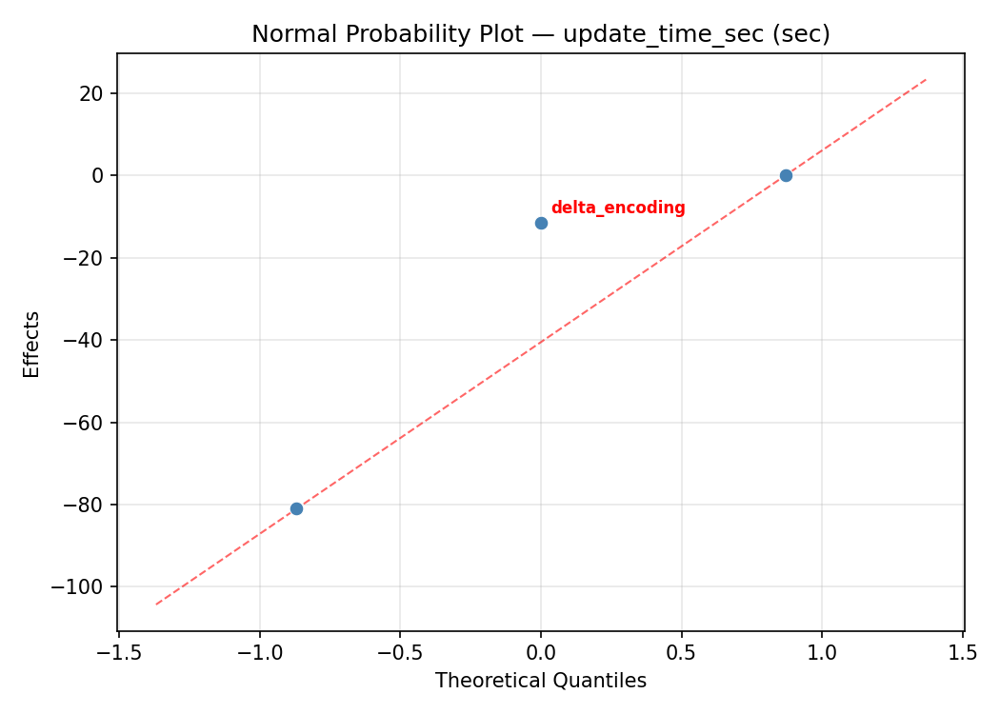
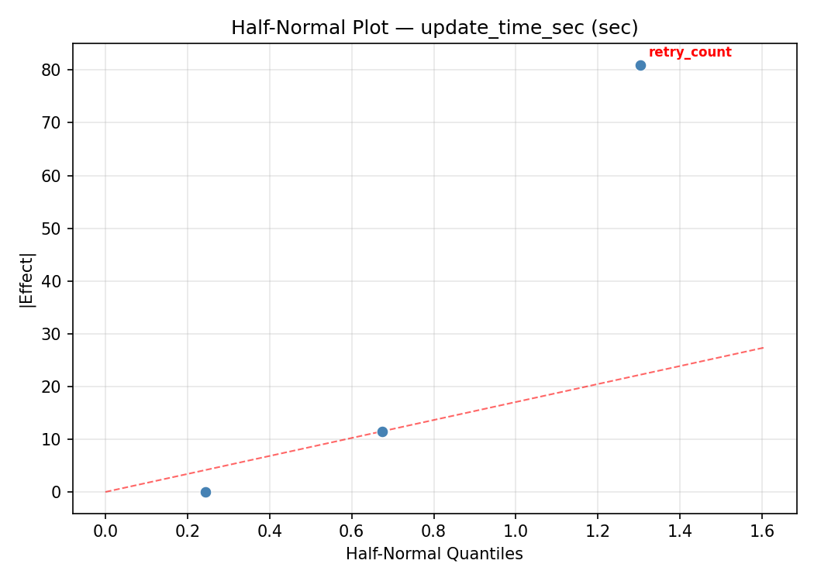
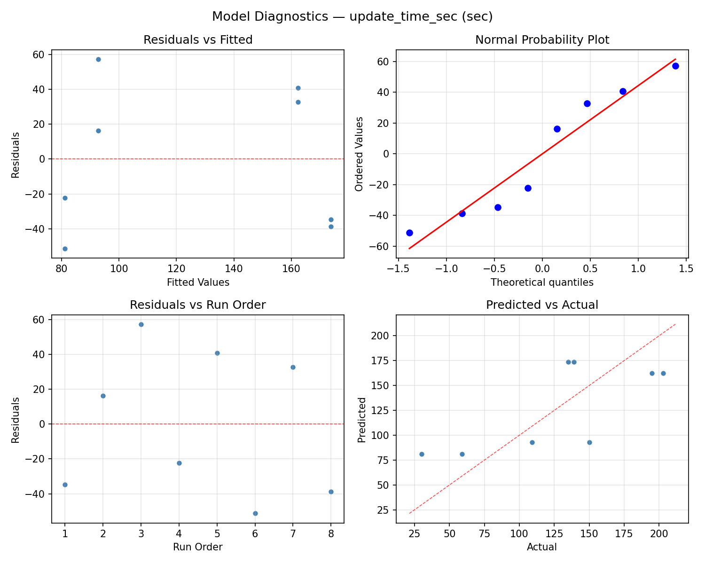
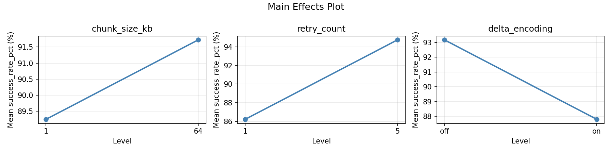
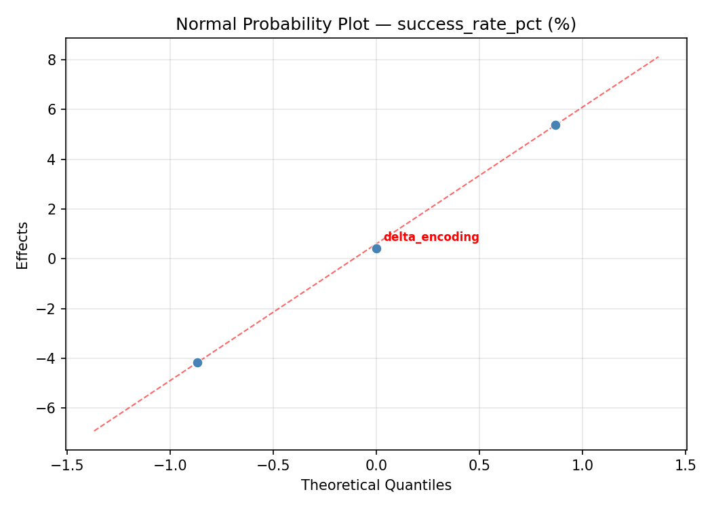
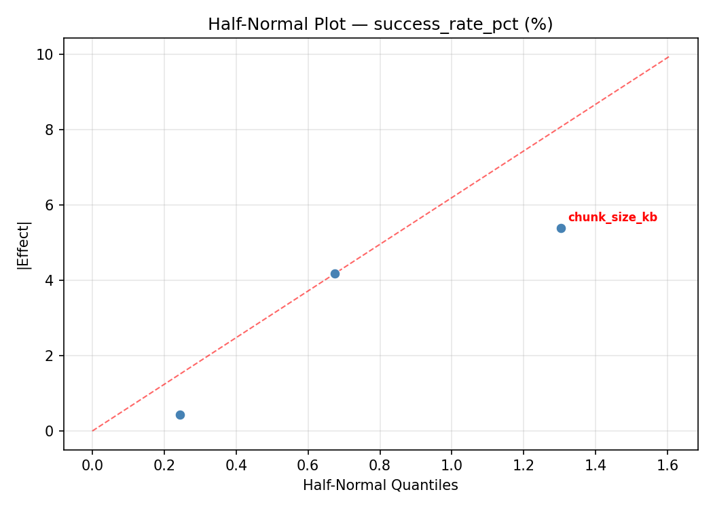
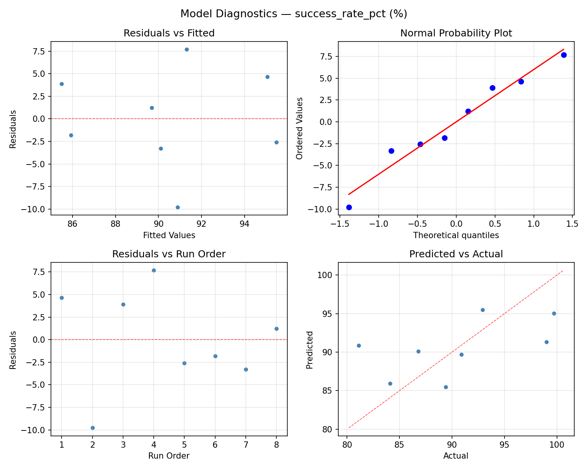
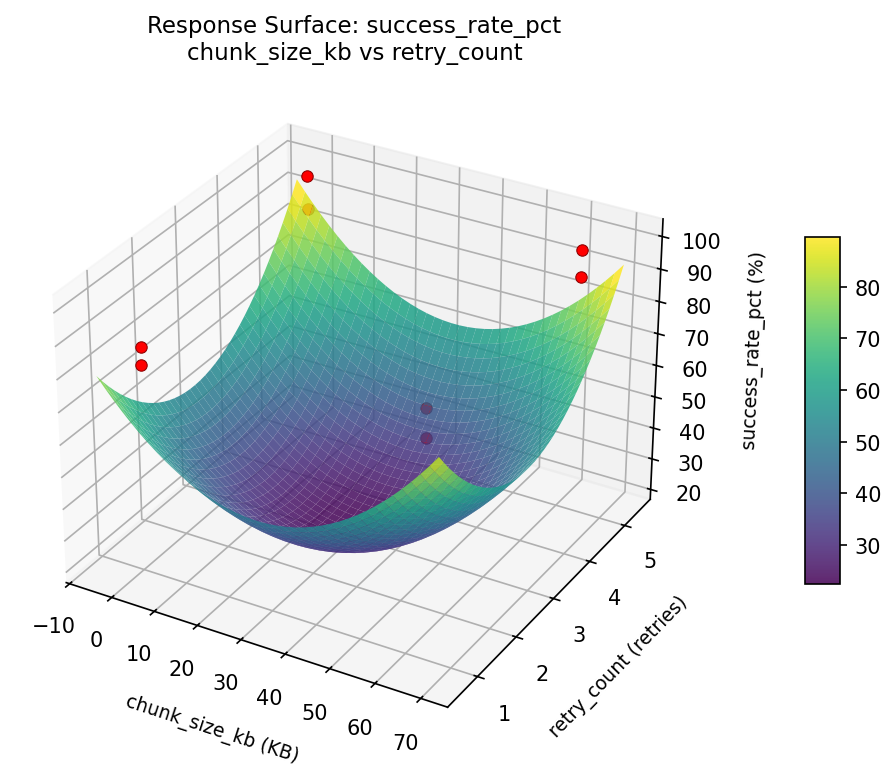
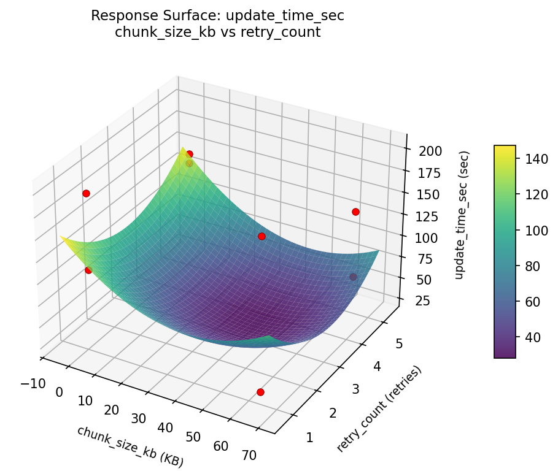

Summary
This experiment investigates firmware ota strategy. Full factorial of chunk size, retry count, and delta encoding for update time and success rate.
The design varies 3 factors: chunk size kb (KB), ranging from 1 to 64, retry count (retries), ranging from 1 to 5, and delta encoding, ranging from off to on. The goal is to optimize 2 responses: update time sec (sec) (minimize) and success rate pct (%) (maximize). Fixed conditions held constant across all runs include transport = coap, compression = lz4.
A full factorial design was used to explore all 8 possible combinations of the 3 factors at two levels. This guarantees that every main effect and interaction can be estimated independently, at the cost of a larger experiment (8 runs).
Key Findings
For update time sec, the most influential factors were chunk size kb (41.5%), delta encoding (38.0%), retry count (20.5%). The best observed value was 30.0 (at chunk size kb = 64, retry count = 1, delta encoding = on).
For success rate pct, the most influential factors were retry count (71.5%), chunk size kb (18.6%), delta encoding (9.9%). The best observed value was 99.7 (at chunk size kb = 64, retry count = 5, delta encoding = off).
Recommended Next Steps
- Consider whether any fixed factors should be varied in a future study.
Experimental Setup
Factors
| Factor | Low | High | Unit |
|---|
chunk_size_kb | 1 | 64 | KB |
retry_count | 1 | 5 | retries |
delta_encoding | off | on | |
Fixed: transport = coap, compression = lz4
Responses
| Response | Direction | Unit |
|---|
update_time_sec | ↓ minimize | sec |
success_rate_pct | ↑ maximize | % |
Configuration
{
"metadata": {
"name": "Firmware OTA Strategy",
"description": "Full factorial of chunk size, retry count, and delta encoding for update time and success rate"
},
"factors": [
{
"name": "chunk_size_kb",
"levels": [
"1",
"64"
],
"type": "continuous",
"unit": "KB"
},
{
"name": "retry_count",
"levels": [
"1",
"5"
],
"type": "continuous",
"unit": "retries"
},
{
"name": "delta_encoding",
"levels": [
"off",
"on"
],
"type": "categorical",
"unit": ""
}
],
"fixed_factors": {
"transport": "coap",
"compression": "lz4"
},
"responses": [
{
"name": "update_time_sec",
"optimize": "minimize",
"unit": "sec"
},
{
"name": "success_rate_pct",
"optimize": "maximize",
"unit": "%"
}
],
"settings": {
"operation": "full_factorial",
"test_script": "use_cases/75_firmware_ota_strategy/sim.sh"
}
}
Experimental Matrix
The Full Factorial Design produces 8 runs. Each row is one experiment with specific factor settings.
| Run | chunk_size_kb | retry_count | delta_encoding |
|---|
| 1 | 1 | 5 | on |
| 2 | 64 | 1 | off |
| 3 | 64 | 5 | off |
| 4 | 64 | 5 | on |
| 5 | 1 | 5 | off |
| 6 | 64 | 1 | on |
| 7 | 1 | 1 | off |
| 8 | 1 | 1 | on |
Step-by-Step Workflow
1
Preview the design
$ doe info --config use_cases/75_firmware_ota_strategy/config.json
2
Generate the runner script
$ doe generate --config use_cases/75_firmware_ota_strategy/config.json \
--output use_cases/75_firmware_ota_strategy/results/run.sh --seed 42
3
Execute the experiments
$ bash use_cases/75_firmware_ota_strategy/results/run.sh
4
Analyze results
$ doe analyze --config use_cases/75_firmware_ota_strategy/config.json
5
Get optimization recommendations
$ doe optimize --config use_cases/75_firmware_ota_strategy/config.json
6
Multi-objective optimization
With 2 competing responses, use --multi to find the best compromise via Derringer–Suich desirability.
$ doe optimize --config use_cases/75_firmware_ota_strategy/config.json --multi
7
Generate the HTML report
$ doe report --config use_cases/75_firmware_ota_strategy/config.json \
--output use_cases/75_firmware_ota_strategy/results/report.html
Features Exercised
| Feature | Value |
|---|
| Design type | full_factorial |
| Factor types | continuous (2), categorical (1) |
| Arg style | double-dash |
| Responses | 2 (update_time_sec ↓, success_rate_pct ↑) |
| Total runs | 8 |
Analysis Results
Generated from actual experiment runs using the DOE Helper Tool.
Response: update_time_sec
Top factors: chunk_size_kb (41.5%), delta_encoding (38.0%), retry_count (20.5%).
ANOVA
| Source | DF | SS | MS | F | p-value |
|---|
| Source | DF | SS | MS | F | p-value |
| chunk_size_kb | 1 | 3444.5000 | 3444.5000 | 21.262 | 0.1360 |
| retry_count | 1 | 840.5000 | 840.5000 | 5.188 | 0.2634 |
| delta_encoding | 1 | 2888.0000 | 2888.0000 | 17.827 | 0.1481 |
| chunk_size_kb*retry_count | 1 | 1568.0000 | 1568.0000 | 9.679 | 0.1980 |
| chunk_size_kb*delta_encoding | 1 | 14964.5000 | 14964.5000 | 92.373 | 0.0660 |
| retry_count*delta_encoding | 1 | 1624.5000 | 1624.5000 | 10.028 | 0.1947 |
| Error | 1 | 162.0000 | 162.0000 | | |
| Total | 7 | 25492.0000 | 3641.7143 | | |
Pareto Chart

Main Effects Plot

Normal Probability Plot of Effects

Half-Normal Plot of Effects

Model Diagnostics

Response: success_rate_pct
Top factors: retry_count (71.5%), chunk_size_kb (18.6%), delta_encoding (9.9%).
ANOVA
| Source | DF | SS | MS | F | p-value |
|---|
| Source | DF | SS | MS | F | p-value |
| chunk_size_kb | 1 | 12.2512 | 12.2512 | 0.117 | 0.7899 |
| retry_count | 1 | 181.4513 | 181.4513 | 1.738 | 0.4131 |
| delta_encoding | 1 | 3.5113 | 3.5113 | 0.034 | 0.8845 |
| chunk_size_kb*retry_count | 1 | 2.3113 | 2.3113 | 0.022 | 0.9060 |
| chunk_size_kb*delta_encoding | 1 | 1.9013 | 1.9013 | 0.018 | 0.9146 |
| retry_count*delta_encoding | 1 | 1.2013 | 1.2013 | 0.012 | 0.9320 |
| Error | 1 | 104.4012 | 104.4012 | | |
| Total | 7 | 307.0288 | 43.8613 | | |
Pareto Chart

Main Effects Plot

Normal Probability Plot of Effects

Half-Normal Plot of Effects

Model Diagnostics

Response Surface Plots
3D surfaces fitted with quadratic RSM. Red dots are observed data points.
success rate pct chunk size kb vs retry count

update time sec chunk size kb vs retry count

Multi-Objective Optimization
When responses compete, Derringer–Suich desirability finds the best compromise.
Each response is scaled to a 0–1 desirability, then combined via a weighted geometric mean.
Overall Desirability
D = 0.8711
Per-Response Desirability
| Response | Weight | Desirability | Predicted | Dir |
|---|
update_time_sec |
1.0 |
|
59.00 0.8022 59.00 sec |
↓ |
success_rate_pct |
1.5 |
|
99.00 0.9203 99.00 % |
↑ |
Recommended Settings
| Factor | Value |
|---|
chunk_size_kb | 64 KB |
retry_count | 1 retries |
delta_encoding | on |
Source: from observed run #4
Trade-off Summary
Sacrifice = how much worse than single-objective best.
| Response | Predicted | Best Observed | Sacrifice |
|---|
success_rate_pct | 99.00 | 99.70 | +0.70 |
Top 3 Runs by Desirability
| Run | D | Factor Settings |
|---|
| #1 | 0.6616 | chunk_size_kb=1, retry_count=5, delta_encoding=on |
| #8 | 0.4719 | chunk_size_kb=64, retry_count=5, delta_encoding=on |
Model Quality
| Response | R² | Type |
|---|
success_rate_pct | 0.5136 | linear |
Full Multi-Objective Output
============================================================
MULTI-OBJECTIVE OPTIMIZATION
Method: Derringer-Suich Desirability Function
============================================================
Overall desirability: D = 0.8711
Response Weight Desirability Predicted Direction
---------------------------------------------------------------------
update_time_sec 1.0 0.8022 59.00 sec ↓
success_rate_pct 1.5 0.9203 99.00 % ↑
Recommended settings:
chunk_size_kb = 64 KB
retry_count = 1 retries
delta_encoding = on
(from observed run #4)
Trade-off summary:
update_time_sec: 59.00 (best observed: 30.00, sacrifice: +29.00)
success_rate_pct: 99.00 (best observed: 99.70, sacrifice: +0.70)
Model quality:
update_time_sec: R² = 0.1518 (linear)
success_rate_pct: R² = 0.5136 (linear)
Top 3 observed runs by overall desirability:
1. Run #4 (D=0.8711): chunk_size_kb=64, retry_count=1, delta_encoding=on
2. Run #1 (D=0.6616): chunk_size_kb=1, retry_count=5, delta_encoding=on
3. Run #8 (D=0.4719): chunk_size_kb=64, retry_count=5, delta_encoding=on
Full Analysis Output
=== Main Effects: update_time_sec ===
Factor Effect Std Error % Contribution
--------------------------------------------------------------
chunk_size_kb -41.5000 21.3358 41.5%
delta_encoding 38.0000 21.3358 38.0%
retry_count -20.5000 21.3358 20.5%
=== ANOVA Table: update_time_sec ===
Source DF SS MS F p-value
-----------------------------------------------------------------------------
chunk_size_kb 1 3444.5000 3444.5000 21.262 0.1360
retry_count 1 840.5000 840.5000 5.188 0.2634
delta_encoding 1 2888.0000 2888.0000 17.827 0.1481
chunk_size_kb*retry_count 1 1568.0000 1568.0000 9.679 0.1980
chunk_size_kb*delta_encoding 1 14964.5000 14964.5000 92.373 0.0660
retry_count*delta_encoding 1 1624.5000 1624.5000 10.028 0.1947
Error 1 162.0000 162.0000
Total 7 25492.0000 3641.7143
=== Interaction Effects: update_time_sec ===
Factor A Factor B Interaction % Contribution
------------------------------------------------------------------------
chunk_size_kb delta_encoding 86.5000 60.5%
retry_count delta_encoding -28.5000 19.9%
chunk_size_kb retry_count -28.0000 19.6%
=== Summary Statistics: update_time_sec ===
chunk_size_kb:
Level N Mean Std Min Max
------------------------------------------------------------
1 4 148.2500 35.6593 109.0000 195.0000
64 4 106.7500 77.9589 30.0000 203.0000
retry_count:
Level N Mean Std Min Max
------------------------------------------------------------
1 4 137.7500 59.4720 59.0000 203.0000
5 4 117.2500 68.4124 30.0000 195.0000
delta_encoding:
Level N Mean Std Min Max
------------------------------------------------------------
off 4 108.5000 77.0649 30.0000 195.0000
on 4 146.5000 39.9458 109.0000 203.0000
=== Main Effects: success_rate_pct ===
Factor Effect Std Error % Contribution
--------------------------------------------------------------
retry_count -9.5250 2.3415 71.5%
chunk_size_kb 2.4750 2.3415 18.6%
delta_encoding 1.3250 2.3415 9.9%
=== ANOVA Table: success_rate_pct ===
Source DF SS MS F p-value
-----------------------------------------------------------------------------
chunk_size_kb 1 12.2512 12.2512 0.117 0.7899
retry_count 1 181.4513 181.4513 1.738 0.4131
delta_encoding 1 3.5113 3.5113 0.034 0.8845
chunk_size_kb*retry_count 1 2.3113 2.3113 0.022 0.9060
chunk_size_kb*delta_encoding 1 1.9013 1.9013 0.018 0.9146
retry_count*delta_encoding 1 1.2013 1.2013 0.012 0.9320
Error 1 104.4012 104.4012
Total 7 307.0288 43.8613
=== Interaction Effects: success_rate_pct ===
Factor A Factor B Interaction % Contribution
------------------------------------------------------------------------
chunk_size_kb retry_count 1.0750 38.1%
chunk_size_kb delta_encoding -0.9750 34.5%
retry_count delta_encoding -0.7750 27.4%
=== Summary Statistics: success_rate_pct ===
chunk_size_kb:
Level N Mean Std Min Max
------------------------------------------------------------
1 4 89.2500 7.7814 81.1000 99.7000
64 4 91.7250 6.1408 84.1000 99.0000
retry_count:
Level N Mean Std Min Max
------------------------------------------------------------
1 4 95.2500 4.9534 89.4000 99.7000
5 4 85.7250 4.1620 81.1000 90.9000
delta_encoding:
Level N Mean Std Min Max
------------------------------------------------------------
off 4 89.8250 6.4881 84.1000 99.0000
on 4 91.1500 7.6861 81.1000 99.7000
Optimization Recommendations
=== Optimization: update_time_sec ===
Direction: minimize
Best observed run: #6
chunk_size_kb = 64
retry_count = 1
delta_encoding = on
Value: 30.0
RSM Model (linear, R² = 0.2979, Adj R² = -0.2287):
Coefficients:
intercept +127.5000
chunk_size_kb -21.7500
retry_count -6.7500
delta_encoding -20.7500
Predicted optimum (from linear model, at observed points):
chunk_size_kb = 1
retry_count = 1
delta_encoding = off
Predicted value: 176.7500
Surface optimum (via L-BFGS-B, linear model):
chunk_size_kb = 64
retry_count = 5
delta_encoding = on
Predicted value: 78.2500
Model quality: Weak fit — consider adding center points or using a different design.
Factor importance:
1. chunk_size_kb (effect: -43.5, contribution: 44.2%)
2. delta_encoding (effect: -41.5, contribution: 42.1%)
3. retry_count (effect: -13.5, contribution: 13.7%)
=== Optimization: success_rate_pct ===
Direction: maximize
Best observed run: #1
chunk_size_kb = 64
retry_count = 5
delta_encoding = off
Value: 99.7
RSM Model (linear, R² = 0.6086, Adj R² = 0.3151):
Coefficients:
intercept +90.4875
chunk_size_kb +1.9125
retry_count +4.2625
delta_encoding +1.2375
Predicted optimum (from linear model, at observed points):
chunk_size_kb = 64
retry_count = 5
delta_encoding = on
Predicted value: 97.9000
Surface optimum (via L-BFGS-B, linear model):
chunk_size_kb = 64
retry_count = 5
delta_encoding = on
Predicted value: 97.9000
Model quality: Moderate fit — use predictions directionally, not precisely.
Factor importance:
1. retry_count (effect: 8.5, contribution: 57.5%)
2. chunk_size_kb (effect: 3.8, contribution: 25.8%)
3. delta_encoding (effect: 2.5, contribution: 16.7%)